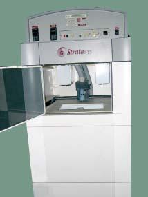

Lịch sử phát triển
-
Thiết bị và vật liệu sản xuất bù đắp sớm được phát triển
-
Phương pháp bù đắp bằng polymer nhiệt cứng ra đời
Hideo Kodama (Viện nghiên cứu công nghiệp thành phố Nagoya) đã phát minh ra phương pháp để chế tạo mô hình nhựa ba chiều.
-
Alain Le Mehaute, Olivier de Witte và Jean Claude André nộp bằng sáng chế cho Công nghệ in 3D SLA
Ứng dụng của các nhà phát minh người Pháp đã bị Công ty Điện lực Pháp (nay là Alcatel-Alsthom) và CILAS (The Laser Consortium) từ bỏ với lý do
vì thiếu quan điểm kinh doanh
-
Chuck Hull nộp bằng sáng chế
Công nghệ in 3D SLAÔng còn đề ra khái niệm Stereolithography
(tạm dịch: Công nghệ in 3D lập thể) -
Các phương pháp làm lắng đọng vật liệu (Material deposition) được nghiên cứu ở ĐH Carnegie Mellon University
Hai trong số đó bao gồm: microcasting (tạm dịch: đúc kim loại quy mô nhỏ) và thermal spray (tạm dịch: phun nhiệt)
-
Máy in công nghệ FDM đầu tiên bởi Stratasys
 -
Thuật ngữ in 3D được đề ra bởi Emanuel Sachs
Nó được sử dụng để chỉ đến quá trình in 3D sử dụng đầu phun bột, được phát triển ở MIT và được thương mại hóa bởi Soligen Technologies
-
Viện Fraunhofer phát triển
quy trình nấu chảy laser chọn lọc SLM -
Bằng sáng chế quy trình in mô hình lắng đọng (FDM) hết hạn
Việc gia công cắt gọt không còn là quá trình gia công kim loại duy nhất cho việc gia công kim loại.
-
Filabot phát triển
hệ thống vòng lặp nhựa
Minh họa hệ thống vòng lặp nhựa - Filabot
Hệ thống này hoạt động với các dòng máy in 3D FDM và FFM, qua đó giúp tái chế và đa dạng hóa nguồn nhiên liệu sử dụng
-
Nguyên mẫu máy in 3D khổ lớn, giá rẻ GIGABOT ra đời
Được tạo ra bởi 2 nhân viên của NASA: Samantha Snabes và Matthew Fiedler.
Họ còn đồng thời sáng lập ra công ty re:3D